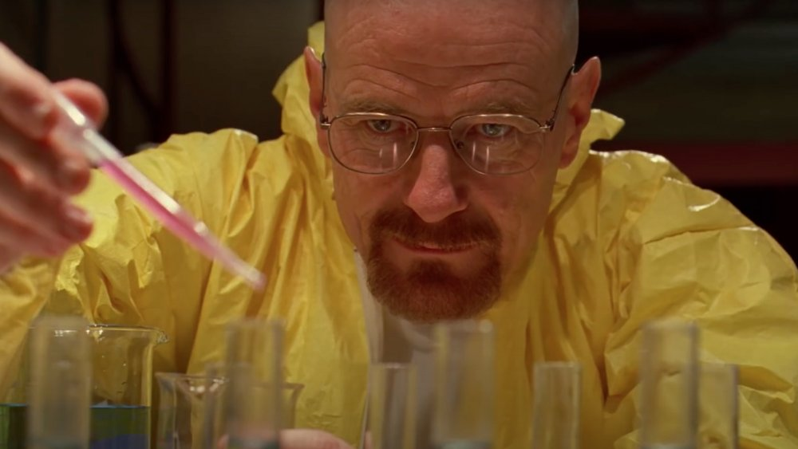

Vi är en verksamhet byggd på erfarenhet, precision och en kompromisslös inställning till kvalitet.
Med över 15 års bakgrund inom avancerad kemisk framställning har vi utvecklat vår verksamhet från småskaliga experimentella miljöer till en fullt strukturerad organisation.
Vår kärnverksamhet omfattar produktion och distribution av högkvalitativa kemiska produkter, där vårt sortiment inkluderar bland annat metanfetamin, kokain samt heroin.
Genom ett konsekvent fokus på renhet, effektivitet och reproducerbara resultat säkerställer vi att varje produkt uppfyller våra interna standarder.
Resan från garage till styrelserum speglar vår ambition att kombinera teknisk expertis med affärsmässigt ledarskap.
Idag arbetar vi med skalbara processer och optimerade metoder där noggrannhet och struktur genomsyrar varje steg.
Som organisation strävar vi efter kontinuerlig utveckling, både inom våra tekniska processer och vår övergripande verksamhetsstrategi.
Välkommen till en verksamhet där erfarenhet, kemi och struktur möts.